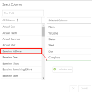

My Work overview
This article provides a brief overview of My Work. The My Work feature is designed for Team Members to view and update all work assignments on a single page. The Plan Owner will see the updated values when they look at the plan schedule and elsewhere (reports, etc.).
My Work allows users to manage work in a List, a Board, and in a personal Resource Plan. From these views, users can group, filter and sort their work items, view work in a gantt chart, save custom view configurations, add activities to work items, add new work items, update work items, and enter time off.
Note
The work items that appear in My Work are based on the tasks date. My Work only shows work items with dates from past or the next 30 days.
Note
If you are assigned to any activities from the work plan, the parent task will show in My Work.
Manage work in the List, Board, or Resource Plan
The List is the main way to manage your work items in My Work. See Manage My Work in lists to manage work in the list.
Users can also manage work in a kan ban board view. Click Board. For more information on managing work in the board view, see Manage My Work in boards.
Users can also view personal resource plan in My Work to see which plans you should be working on and if you are over or under allocated. Click Resource Plan to view your personal resource plan. See View your personal resource plan in My Work for more information.
Typical actions in My Work
The following are typical actions a Team Member will take when using My Work.
For more information on how to use all of the components of My Work, see Manage My Work in lists, Manage My Work in boards, and View your personal resource plan in My Work.
Group, filter, sort, and arrange work items
To narrow and organize the work items in My Work, use the group, filter, sort, and column functions.
Modify views
Make any changes to the view, such as adding columns, arranging columns, etc.
Add or remove columns
Right-click a column header
To add or remove a column:
Right-click in any column header. Expand the Columns sub-heading.
Note
The columns already in the view marked with a check. The remaining available fields are listed.
Select or deselect the columns to show or hide in the view. Newly added columns show on the far right.
Select Columns button
To add or remove columns:
Click Select Columns. The Select Columns form will open.
To add columns to the view, drag and drop desired columns from the All Columns column into the Selected Columns column.
To remove a column, drag and drop the desired column from the Selected Columns column into the All Columns column.

Arrange column order
To arrange the columns, click on the column heading and drag the column to the desired location. Let go of the mouse to drop the column in that spot.
Sort columns
Click on the column header so sort the column in ascending or descending order.
Group work items
Select a grouping category from the Group By drop down to group the work items.
Filter work items
Click the Filter icon to sort the Work Items by a field.
Mark a work item "complete"
Select the check box to mark an item as complete. Status will update to Completed and % Done will update to 100%.
Once you have updated the task and the Project Manager has accepted the changes there will be an approval status indicator. This makes it easy to see if the status updates have been approved.
Update work item information
Click into and update any field in line that's editable, such as % Done, Status, etc.
Note
Some fields are auto-updated based on the values of others, such as the Status and % Done. If you update the Status from Not Started to In Progress, the % Done goes from 0% to 50%, and vice versa.
Enter a time off request
Click Time Off to enter a time off request. See Enter a time off requestfor more information on entering a time off request.